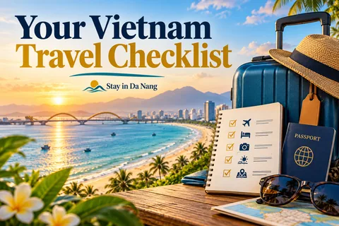
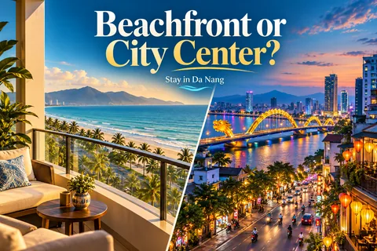
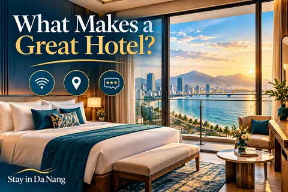
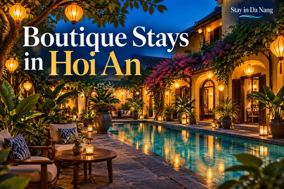
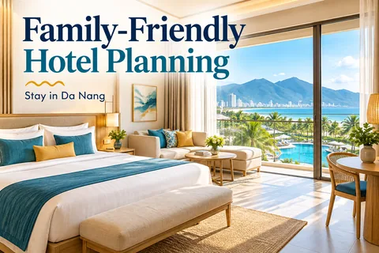
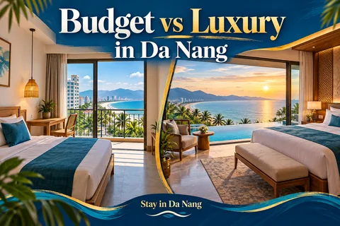
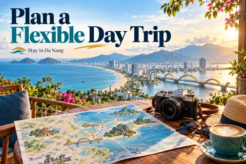
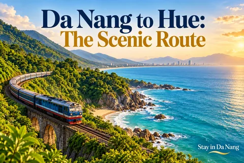

여행 블로그
베트남 여행 가이드: 일정, 숙박 지역, 실제 유산 여행지.

베트남 여행 계획: 교통, 날씨, 예약 팁
며칠 만에 전국을 이동하기보다는 한 지역을 중심으로 일정을 짜세요.
가이드 읽기 →
다낭 숙박 지역: 미케, 한강, 논느억 비교
여행 계획에 맞는 지역을 고른 뒤 개별 호텔과 최근 이용 후기를 비교하세요.
가이드 읽기 →
다낭·호이안·후에: 유연한 4일 일정
이동 시간을 고려한 중부 베트남 예시 코스입니다. 판매 중인 패키지나 보장된 일정이 아닙니다.
가이드 읽기 →
베트남의 실제 유산 여행지 다섯 곳
아래 여행지는 유네스코 공식 목록에 등재되어 있습니다. 여러 지역에 흩어져 있으므로 경로에 맞춰 선택하세요.
가이드 읽기 →
다낭 2026: 호텔·투어·항공편 함께 계획하기
항공 날짜를 정하고 숙박 지역을 고른 뒤 바나힐, 오행산 또는 호이안에 시간을 배정하세요. @stayindanang 게시물을 실용적인 여행 계획으로 확장한 안내입니다.
가이드 읽기 →
베트남에서 무엇을 먹을까: 지역별 음식 안내
검증되지 않은 맛집 순위보다 지역 음식으로 여행지를 알아보세요.
가이드 읽기 →
중부 해안 체험: 미케, 논느억, 호이안
모든 시간을 투어로 채우지 않고 산책, 문화와 휴식을 조합하세요.
가이드 읽기 →
하노이와 호찌민 도보 여행: 두 개의 독립 코스
두 도시는 다른 지역에 있어 하루에 연결하는 코스가 아닙니다.
가이드 읽기 →
닌빈 2일: 짱안, 항무아와 느린 여행
닌빈의 석회암 풍경과 물길에 이틀을 배정하고 무리한 이동을 줄이세요.
가이드 읽기 →
사파 계곡 걷기: 므엉호아와 계절 선택
사파 계곡은 체력에 맞는 코스와 우천 대안을 준비하고 현지 생활을 존중하며 둘러보세요.
가이드 읽기 →
푸꾸옥 3일: 해변, 음식과 유연한 일정
푸꾸옥은 도착, 탐방, 휴식으로 나누고 실제 날씨에 맞춰 활동을 고르세요.
가이드 읽기 →
Huế · 추천 일정 · 1일차–3일차
Huế · 예약 전 운영 시간, 날씨, 티켓 조건과 국적에 따른 입국 규정을 확인하세요. 개별 여행을 위한 제안이며 티켓이나 서비스가 포함되지 않습니다.
가이드 읽기 →
Hạ Long–Cát Bà · 추천 일정 · 1일차–3일차
Hạ Long–Cát Bà · 예약 전 운영 시간, 날씨, 티켓 조건과 국적에 따른 입국 규정을 확인하세요. 개별 여행을 위한 제안이며 티켓이나 서비스가 포함되지 않습니다.
가이드 읽기 →
Kyoto · 추천 일정 · 1일차–3일차
Kyoto · 예약 전 운영 시간, 날씨, 티켓 조건과 국적에 따른 입국 규정을 확인하세요. 개별 여행을 위한 제안이며 티켓이나 서비스가 포함되지 않습니다.
가이드 읽기 →
Paris · 추천 일정 · 1일차–4일차
Paris · 예약 전 운영 시간, 날씨, 티켓 조건과 국적에 따른 입국 규정을 확인하세요. 개별 여행을 위한 제안이며 티켓이나 서비스가 포함되지 않습니다.
가이드 읽기 →
New York · 추천 일정 · 1일차–4일차
New York · 예약 전 운영 시간, 날씨, 티켓 조건과 국적에 따른 입국 규정을 확인하세요. 개별 여행을 위한 제안이며 티켓이나 서비스가 포함되지 않습니다.
가이드 읽기 →
Sydney · 추천 일정 · 1일차–3일차
Sydney · 예약 전 운영 시간, 날씨, 티켓 조건과 국적에 따른 입국 규정을 확인하세요. 개별 여행을 위한 제안이며 티켓이나 서비스가 포함되지 않습니다.
가이드 읽기 →Meet Stay in Da Nang · 여행 팁
베트남 여행 가이드: 일정, 숙박 지역, 실제 유산 여행지.
가이드 읽기 →Six Ways to Explore Vietnam · 여행 팁
베트남 여행 가이드: 일정, 숙박 지역, 실제 유산 여행지.
가이드 읽기 →Why Da Nang? · 여행 팁
베트남 여행 가이드: 일정, 숙박 지역, 실제 유산 여행지.
가이드 읽기 →
Your Vietnam Travel Checklist · 여행 팁
베트남 여행 가이드: 일정, 숙박 지역, 실제 유산 여행지.
가이드 읽기 →A Weekend in Da Nang · 여행 팁
베트남 여행 가이드: 일정, 숙박 지역, 실제 유산 여행지.
가이드 읽기 →Stay Near My Khe Beach · 여행 팁
베트남 여행 가이드: 일정, 숙박 지역, 실제 유산 여행지.
가이드 읽기 →
Beachfront or City Center? · 여행 팁
베트남 여행 가이드: 일정, 숙박 지역, 실제 유산 여행지.
가이드 읽기 →
What Makes a Great Hotel? · 여행 팁
베트남 여행 가이드: 일정, 숙박 지역, 실제 유산 여행지.
가이드 읽기 →Resort Days in Vietnam · 여행 팁
베트남 여행 가이드: 일정, 숙박 지역, 실제 유산 여행지.
가이드 읽기 →
Boutique Stays in Hoi An · 여행 팁
베트남 여행 가이드: 일정, 숙박 지역, 실제 유산 여행지.
가이드 읽기 →Hotel Booking Mistakes to Avoid · 여행 팁
베트남 여행 가이드: 일정, 숙박 지역, 실제 유산 여행지.
가이드 읽기 →Da Nang for Couples · 여행 팁
베트남 여행 가이드: 일정, 숙박 지역, 실제 유산 여행지.
가이드 읽기 →
Family-Friendly Hotel Planning · 여행 팁
베트남 여행 가이드: 일정, 숙박 지역, 실제 유산 여행지.
가이드 읽기 →
Budget vs Luxury in Da Nang · 여행 팁
베트남 여행 가이드: 일정, 숙박 지역, 실제 유산 여행지.
가이드 읽기 →Your Hotel Shortlist · 여행 팁
베트남 여행 가이드: 일정, 숙박 지역, 실제 유산 여행지.
가이드 읽기 →Ba Na Hills Day Trip · 여행 팁
베트남 여행 가이드: 일정, 숙박 지역, 실제 유산 여행지.
가이드 읽기 →Hoi An After Dark · 여행 팁
베트남 여행 가이드: 일정, 숙박 지역, 실제 유산 여행지.
가이드 읽기 →A Day in Historic Hue · 여행 팁
베트남 여행 가이드: 일정, 숙박 지역, 실제 유산 여행지.
가이드 읽기 →The Food Lover’s Vietnam · 여행 팁
베트남 여행 가이드: 일정, 숙박 지역, 실제 유산 여행지.
가이드 읽기 →Travel Slowly in Central Vietnam · 여행 팁
베트남 여행 가이드: 일정, 숙박 지역, 실제 유산 여행지.
가이드 읽기 →Culture Beyond the Beach · 여행 팁
베트남 여행 가이드: 일정, 숙박 지역, 실제 유산 여행지.
가이드 읽기 →Sunrise or Sunset Adventures? · 여행 팁
베트남 여행 가이드: 일정, 숙박 지역, 실제 유산 여행지.
가이드 읽기 →
Plan a Flexible Day Trip · 여행 팁
베트남 여행 가이드: 일정, 숙박 지역, 실제 유산 여행지.
가이드 읽기 →Flying into Da Nang · 여행 팁
베트남 여행 가이드: 일정, 숙박 지역, 실제 유산 여행지.
가이드 읽기 →Vietnam by Train · 여행 팁
베트남 여행 가이드: 일정, 숙박 지역, 실제 유산 여행지.
가이드 읽기 →
Da Nang to Hue: The Scenic Route · 여행 팁
베트남 여행 가이드: 일정, 숙박 지역, 실제 유산 여행지.
가이드 읽기 →Airport Transfer Planning · 여행 팁
베트남 여행 가이드: 일정, 숙박 지역, 실제 유산 여행지.
가이드 읽기 →Road Trip Inspiration · 여행 팁
베트남 여행 가이드: 일정, 숙박 지역, 실제 유산 여행지.
가이드 읽기 →Best Time to Visit Da Nang? · 여행 팁
베트남 여행 가이드: 일정, 숙박 지역, 실제 유산 여행지.
가이드 읽기 →Your Vietnam Adventure Starts Here · 여행 팁
베트남 여행 가이드: 일정, 숙박 지역, 실제 유산 여행지.
가이드 읽기 →실제 장소와 일반적인 여행 계획을 소개하는 글이며, 직접 체험한 후기나 실시간 특가가 아닙니다. 출발 전에 공식 기관이나 제공 업체에서 입국 규정, 날씨, 운영 시간, 예약 가능 여부와 가격을 확인하세요.